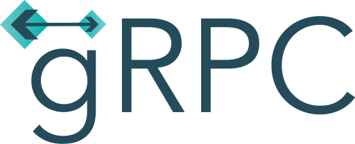
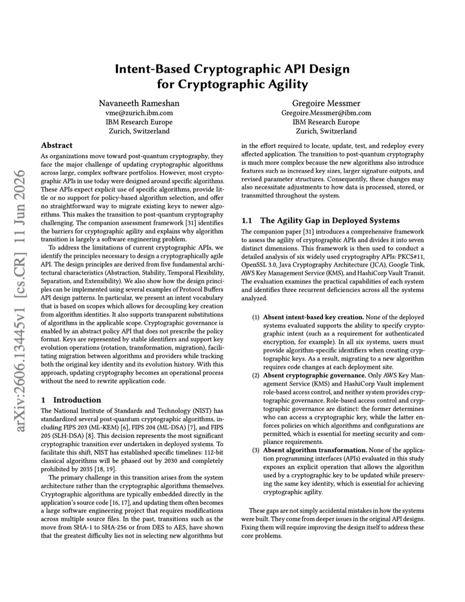

Name only your intent
Your code states what it needs, for example a signature. The policy selects the algorithm.
Your code requests a signature or authenticated encryption, and a policy selects the algorithm. When you move a key from ECDSA to ML-DSA, no call site changes.
Research prototype, open source under Apache-2.0. Use it only for tests.
With Citius, your code requests a signature or encryption and does not name an algorithm. When you must replace an algorithm, your security team changes the policy. Your code does not change.
Most cryptography libraries make the application specify the algorithm, the curve, the hash function and the buffer size. To move one signature function from ECDSA to ML-DSA in PKCS#11, you change five places in the code.
NIST deprecates 112-bit classical algorithms by 2030 and disallows them by 2035.
The change from SHA-1 to SHA-256 took about ten years, although the two functions have the same interface.
You must change each line that names the algorithm, in every application. You must do this again for each new algorithm.
A new algorithm is a new entry in the catalog, and your code does not change. The request names the task. The response names the template that the policy selected. See the catalog file
Your code states what it needs, for example a signature. The policy selects the algorithm.
A key keeps its name when its algorithm changes. Signatures made with the old algorithm stay valid.
Your security team defines which algorithms a key can use. The policy is in one location, separate from the code.
The same call runs on the software provider, on OpenSSL or on OpenSSL in FIPS mode.
All components follow the protobuf specification. All are early releases and open source under Apache-2.0. The README of each component lists its limits. See all versions

citius-serverReference gRPC server with in-memory keysmainThe first paper rates PKCS#11, OpenSSL, JCA, Tink, AWS KMS and Vault on seven agility dimensions. The second paper designs an API that solves the three problems that all six have.
Rameshan and Messmer, IBM Research Europe, Zurich. arXiv:2606.13425 and arXiv:2606.13445, June 2026.

You can open issues and pull requests on every repository. Four implementations follow the specification, so each change to it starts as a proposal.
You need Go and OpenSSL 3.5 or later. CI runs the same race and lint checks.
You need Rust, libclang and a C compiler. Miri, TSan and the Go interoperability tests need a nightly toolchain.
Write a proposal in the style of PROTO_RFCS.md. New C functions stay optional in agc_ext.h until the specification includes them.